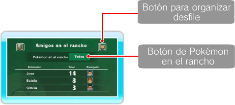
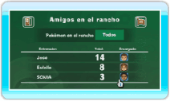
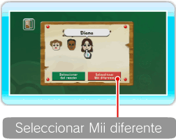
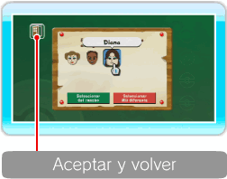
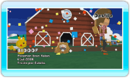

18 |
Detalles |
 |
Aquí podrás decidir qué Pokémon quieres que aparezcan en el rancho, así como consultar información sobre los Miis y organizar desfiles Pokémon. Para determinar qué Pokémon quieres visualizar en tu rancho, apunta hacia el botón de Pokémon en el rancho y pulsa  ● ¿Qué es un encargado Pokémon? Se trata de un Mii que se encarga de cuidar a los Pokémon que un entrenador haya llevado al rancho. El Mii que designes como encargado se llevará muy bien con los Pokémon. 
● Cambiar al encargado Pokémon En la pantalla de detalles, apunta hacia el Mii que desees cambiar y pulsa Designar como encargado un Mii que ya esté en el rancho Cuando aparezca la pantalla de configuración de encargados, apunta hacia el Mii que desees cambiar y pulsa Nota: Los Miis que tengan el símbolo bajo sus rostros serán los Miis a los que ya se haya designado como encargados en el rancho.
Seleccionar como encargado un Mii que no esté en el rancho


Si deseas seleccionar un Mii que no aparezca en la pantalla de configuración de encargados, apunta hacia SELECCIONAR Mii DIFERENTE y pulsa Nota: La opción SELECCIONAR Mii DIFERENTE no estará disponible si ya cuentas con el número máximo de Miis en el rancho. Una vez que hayas establecido el Mii encargado, apunta hacia ACEPTAR Y VOLVER y pulsa Nota: No podrás cambiar el estado de encargada de Eulalia. Borrar un Mii Si borras un Mii del Canal Mii, también desaparecerá del rancho, y automáticamente se designará un nuevo Mii como encargado. ● Añadir Pokémon a Favoritos Esta función estará disponible cuando lleves un determinado número de Pokémon al rancho. Cuando añadas un Pokémon a Favoritos, tendrás la opción de ver tan solo a los Pokémon favoritos en el rancho. Para añadir un Pokémon a Favoritos, apunta hacia

● Desfile Apunta hacia el botón para organizar un desfile en la pantalla de detalles y pulsa |

 a la izquierda del nombre del Pokémon y pulsa
a la izquierda del nombre del Pokémon y pulsa  cuando desees finalizar el desfile.
cuando desees finalizar el desfile. |
 |
 |